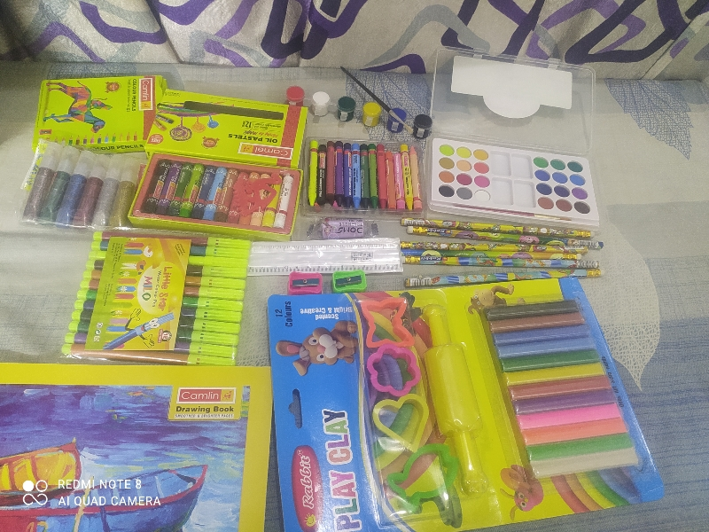

SOCIAL RESPONSIBILITY & COMMUNITY ENGAGEMENT
(SW613)
A Project Report on
"An NGO that is committed to building for disabled persons"
Submitted to
Prof. Dr. Supriya Chakraborty
-By
Rohan Singh A914145022005
Akash Debnath A914145022002
Shuvam Ghosh A914145022011
Sangam Ghosh A914145022010
Aditya Bist A914145022020
Rishav Khamrui A914145022023
Pritesh Ashtekar A914145022027
Swastika Gupta A914145022042
Ankita Biswas A914145022044
Ritusree Chakraborty A914145022052
Joybrato Paul A914145022068
SANGBEDAN
Activities we did with the Kids:
1)Item Distribution
2)Drawing Copy
3)Color-pencil set
4)Notebook
5)Drawing Chart Papers
6)Gifts
7)Interaction
8)Question Asked
Why SANGBEDAN NGO?
Disabled people's organizations have arisen in response to societal barriers that have prevented the equal participation of people with disabilities, and as a reaction against the control of people with disabilities by others. For a long time, people with disabilities have been spoken for by health professionals, family and others without regard for their needs, priorities or choices. People with disabilities are their own best spokespersons and representatives, as they know best their needs and aspirations.
Officials from non-governmental organizations (NGOs) give support, information, & services to handicapped children and their families, assisting them in making educated decisions. They are responsible for promoting and defending the rights and interests of children.
Program held by us:-
Drawing Competitions
Teach them how to do some drawings
General questions
Some motivational speech
Talk with their parents
Team Initiative and Plans:
We choose a nearby area Shobhabazar (44/1B, Ramdhan Mitra Ln, Sovabazar, Hati Bagan, Shyam Bazar, Kolkata, West Bengal 700004), where we made a visit of 2 places. One in NGO and another in open field where we conducted some activities
Like:-
Teaching them
:-
Drawing Competitions:-
General Questions: We also asked them few questions?
What is their hobby?
How do they feel to spend a day with us?
Interaction:
A strategic plan can be very useful promotional material for an NGO, but more than that it is a very important tool for organizational development.
The past three decades have witnessed the emergence of the area of Disability Studies, whose intellectual heritage is based on the generic academic disciplines of medical science, psychology, political theory, and sociology. The fundamental raison d'être of Disability Studies has been to provide a theoretical explanation of how disability can be understood, as well as to provide normative principles upon which the operational practices for the provision of disability services should be based. The post-war era has also witnessed the global development of the "disability movement". There has been close collaboration between the academic study of disability and those engaged in disability activism.
Our team consists of 11 members and we divided our work into 4 or 3 members for buying our required items.

D-DAY
Badgets Given by NGO
Badgets given by them as an achievement and good work.
CONCLUSION
The significant growth and development of the NGO sector over the last few decades raises the question of whether NGOs are a permanent feature on the development landscape. To promote effective people's participation and participatory development, NGOs are able to provide structures and mechanisms for the involvement of people. NGOs and people's organizations, unburdened with large bureaucracies and noted for their flexibility and innovativeness, are often able to implement programs and activities more effectively. In conclusion, people with intellectual disabilities can live meaningful, satisfying, and productive lives, within their own communities, when provided adequate supports.